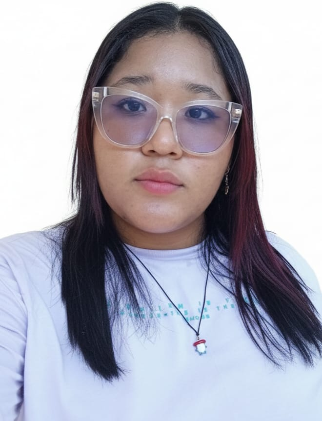

Hola, soy Daniela Judith Villalba De Hoyos, tengo 20 años y actualmente curso el sexto semestre de Ingeniería de Software en la Universidad de Cartagena. Me considero una mujer responsable, comprometida y con gran capacidad para aprender y adaptarme a nuevos retos. Me caracterizo por mi optimismo, disciplina y disposición para trabajar en equipo, siempre buscando dar lo mejor de mí en cada proyecto o actividad que realizo.
Mi interés principal es continuar fortaleciendo mis conocimientos en el área de la tecnología y el desarrollo de software, con el objetivo de contribuir al desarrollo de soluciones innovadoras que aporten valor a la sociedad y a las organizaciones.